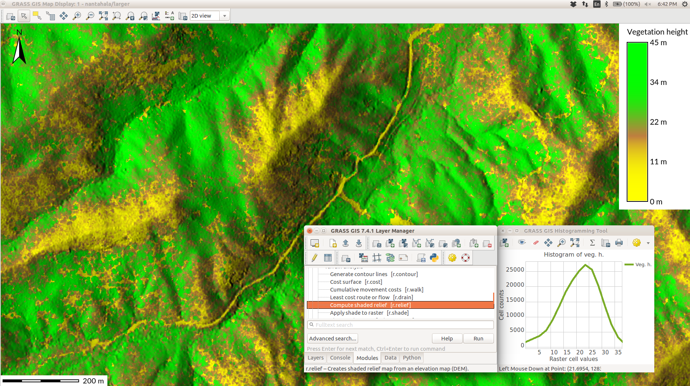
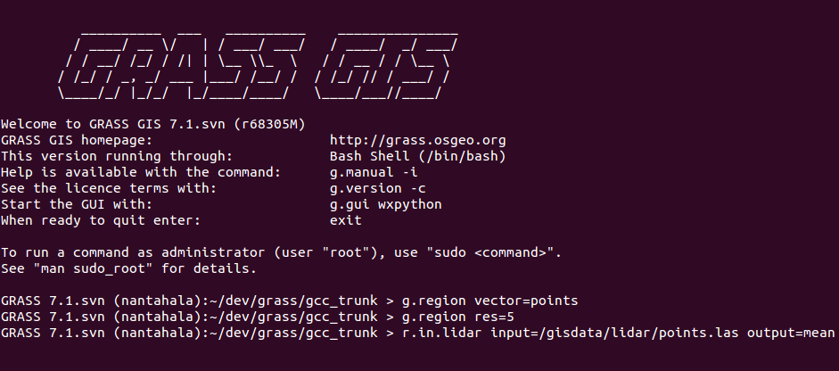
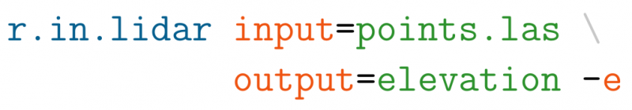
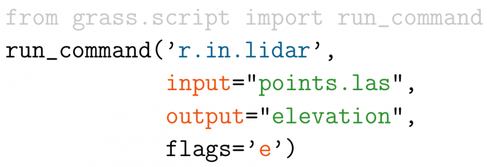
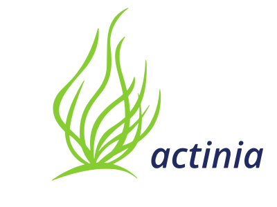
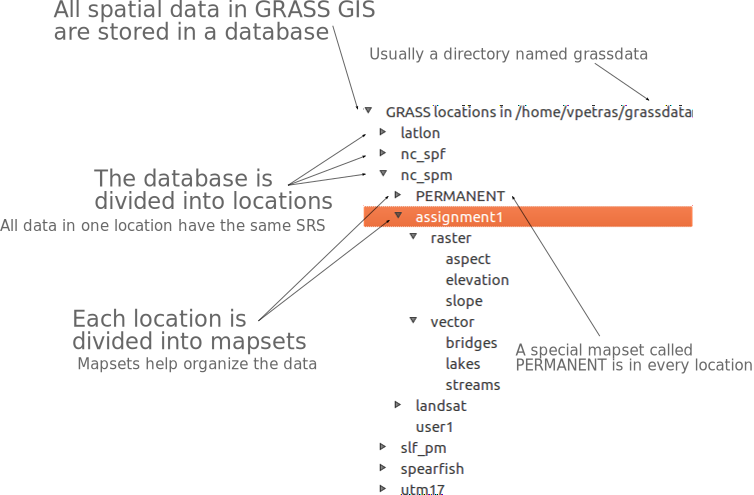
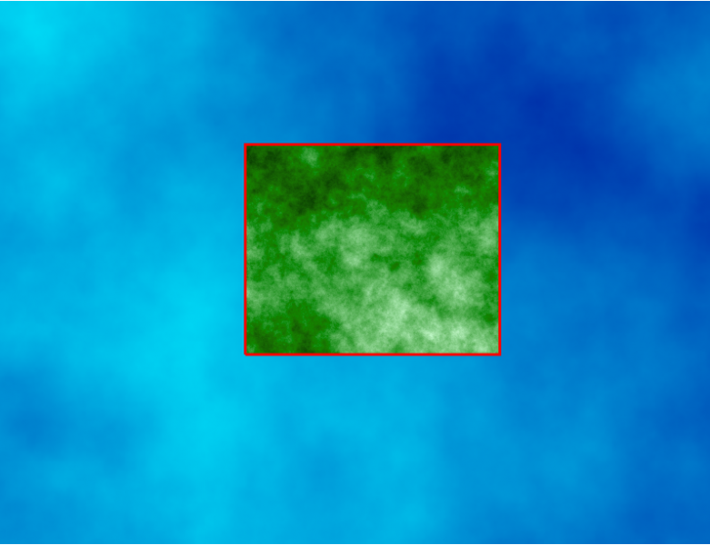
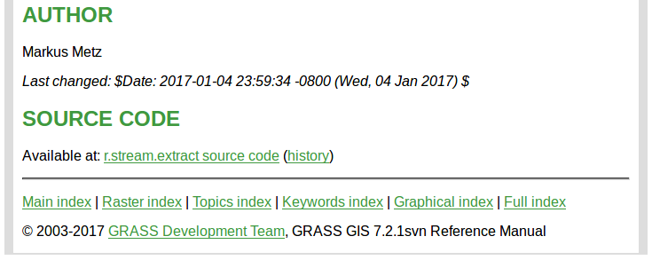
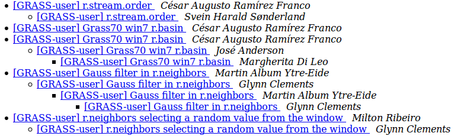

GRASS GIS
Getting Started
NCSU GeoForAll Lab
at the
Center for Geospatial Analytics
North Carolina State University
Corey White, NCSU
Doug Newcomb, USFWS

NCGIS 2019 Winston-Salem
GRASS GIS
-
Timeline:
- 1983 started at US Army CERL
as a land management system
- William Shatner narrates a promotional video doi.org/10.5446/12963
- evolved into a general purpose GIS
- 1999 international team of developers + GNU GPL
- 2008 OSGeo Project
- 2018 35 years of GRASS GIS development
- 2019 latest release Jan 21, 2019 (7.6.0)
- check out last change (probably just few hours ago)
- 1983 started at US Army CERL
as a land management system
Licensing
- According to Stallman,
there are four freedoms that you should have as a user:
- the freedom to use the software for any purpose,
- the freedom to change the software to suit your needs,
- the freedom to share the software, and
- the freedom to share the changes you make.
Stallman, R. M. (2002). Free software, free society: selected essays. Ed. by J. Gay. 1st. ed. OCLC: 253840339. Boston, Mass: Free Software Foundation. 220 pp. ISBN 978-1-882114-98-6.
Processing Capabilities Overview
- raster and 3D raster
- map algebra, DEM, interpolation, flow, neighborhood, solar, cost surfaces, ...
- imagery (remote sensing)
- rectification, multispectral, classification, segmentation, PCA, FFT, ...
- vector and database
- buffers, overlays, networks, topology, attribute management, SQL, ...
- spatio-temporal data (time series)
- sampling, statistics, aggregation, temporal topology, algebra, ...
General Capabilities Overview
- visualization
- 2D display, 3D visualization, temporal visualization, PNG, PS and PDF maps, ...
- interoperability
- import from and export to different formats, WMS, JSON, ...
- extensibility
- scriptable (typically Python or Bash), custom tools (typically Python or C), ...
Research Use
- Used as a research platform and code repository
- Example: Solar radiation model (r.sun)
- available since 1993
- major changes in 1996, 1999, 2002, 2003, 2006, 2008, 2017
- parallelized version in 7.4
- by Jaroslav Hofierka, Marcel Suri et al. (2004, 2007, ...)

summer solstice dynamics on lidar DEM (NCSU Centennial Campus)
Software Description
- portable:
- many operating systems: MS Windows, macOS, Linux, ...
- 32bit and 64bit versions
- high-end desktops, low-end laptops, Raspberry Pi, High-Performance Computing clusters, ...
- single integrated software
- functionality divided into modules
- written in C and Python

Naming of Modules
| Prefix | Functionality | Example |
|---|---|---|
| r. | raster processing | r.mapcalc: raster map algebra |
| v. | vector processing | v.surf.rst: interpolation from points |
| g. | general management | g.remove: removes maps |
| d. | display and rendering | d.rast: display raster map |

User Interfaces
- Functionality divided into modules (over 500)
- Modules can be accessed using:
- Graphical User Interface (GUI)
- Command Line Interface (CLI)
- Python

GUI
- The interface for desktop

GUI for modules
- All modules have standardized, unified interface layout.

Standard dialog (form) for the r.neighbors module
Graphical Modeler
- Visual programing tool

Command Line
- The baseline interface for efficiency and reproducibility
- Available in GUI as Console with autocomplete functions
r.fill.dir input=elev output=fill direction=dir
Python
- grass package part of GRASS GIS
- access to modules, but also to internal C functions
- integrated Python editor in GRASS GIS
- integrates with Jupyter Notebooks
- combine with PyPI grass-session package for external use
(
pip install grass-sessionandimport grass_session)
import grass.script as gs
gs.run_command('r.fill.dir', input='elev',
output='fill', direction='dir')
Duality between GUI and commands
 Python:

Examples in the documentation and class instructions are usually provided as commands which can be used to fill in the GUI, write Python code, or run them directly.
3rd Party Interfaces
- QGIS (Processing Plugin and GRASS Plugin)
- R (rgrass7 package)
- ...

3rd Party Interfaces
- Actinia – The GRASS GIS REST API
- Used in the OpenEO GRASS GIS driver

3rd Party Interfaces
- Tangible Landscape
- tangible user interface to GRASS GIS and Blender
- by NC State University, Center for Geospatial Analytics
Modules running: v.surf.rst, r.contour, r.fill.dir, r.sim.water
APIs
- native:
- C (usable in C++)
- Python
- command line (Bash, cmd, …)
- 3rd party:
- R (rgrass7 package)
- Ruby (grassgis gem)
- Java (JGrasstools library)
- as backend:
- QGIS Processing (Python and R APIs)
- PyWPS (OGC WPS)
- Actinia (REST)
- gvSIG JGrasstools Spatial Toolbox under development
GRASS GIS in the FOSS Ecosystem
- Inkscape, Gimp, ImageMagic, GMT, QGIS
- Graphics and refined the cartography
- PostgreSQL with PostGIS
- Relational database (spatial and non-spatial data storage)
- R, Octave, Python, Jupyter, LibreOffice
- Statistics, non-spatial data analysis
- OpenLayers, Leaflet, Django, Flask
- Web interface
- PyWPS, ZOO-Project, Actinia
- Processing server
- MapServer, GeoServer, QGIS Server
- spatial data publishing server
Spatial Database
Selecting Mapset
- Selecting database, location, and mapset

Computational Region
- extent and resolution for raster computations

Documentation: Public Author & Accessible Code
Documentation: Link to Research Papers

Asking Questions
- Mailing list discussions (archived since 1991)
- GIS StackExchange, ...
- Commercial support
-

Addons Repository
- user contributed modules, plugins, tools, functions
- distributed to users
- including compiled C and C++ for MS Windows
- automatically generated GUI for Python and C/C++
Peer-reviewed Implementation
- Example:
- user tested the module
- discovered error in equation in code

Resources
- Documentation:
- Tutorials:
-
Books:
- Open Source GIS: A GRASS GIS Approach
- Tangible Modeling with Open Source GIS
- GIS-based Analysis of Coastal Lidar Time-Series
- Open Source Approaches to Spatial Data Handling
Support
- Community support
- Commercial support
Summary
- Licensing: No "purchasing of licenses" needed for users
- Support: Community and commercial
- Several user interfaces
- GUI and command line
- Python (+Jupyter)
- 3rd party
- Data organized into databases, locations and mapsets
- Raster operations follow a specified computational region
github.com/wenzeslaus/grass-gis-talks